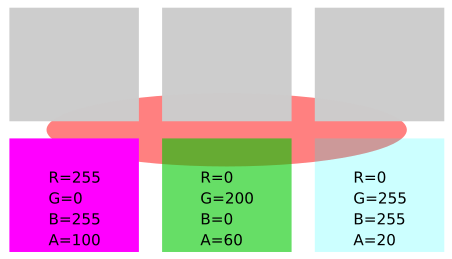
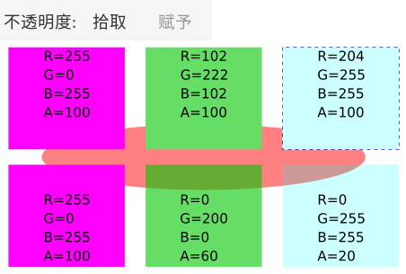
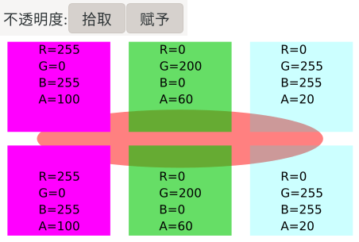

滴管工具
快捷键：D 或者 F7
滴管工具( )用来拾取当前已有的颜色。如果当前有某个颜色已经存在，现在想在其它对象上使用这个颜色，那么可以用这个工具来快速得到并应用需要的颜色。
{kind=link}
此工具可以拾取矢量图颜色，也可以拾取嵌入的位图的颜色。
操作方法
选择需要填充颜色的对象；
在需要拾取的颜色上点击即可。
(目标对象已经填充成滴管工具点击位置的颜色)
(滴管工具放在某颜色上方时，窗口下方的提示区域会显示该颜色的色值信息，类似下面这样的格式：
#ff00dd alpha 0.502#ff00dd 表示颜色的RGB色值，形式是16进制：ff表示R的色值为255，即16进制的ff换算成10进制为255；00表示G的色值为0，即16进制的00换算成10进制为0；dd表示B的色值为221，即16进制的dd换算成10进制为221；(字母不区分大小写)alpha 0.502 表示该颜色的不透明度，也叫alpha通道值，范围0到1；值越小越透明，0表示完全透明，1表示完全不透明。
辅助快捷键
拾取目标颜色的反色：Alt+点击；即拾取时按住Alt键。
拾取为描边色：默认拾取的颜色会应用到目标对象的填充色上，Shift+点击 则可以应用到目标对象的描边色上。
工具选项
不透明度
虽然只有这一个选项，但这个选项有两个参数相互影响，一共产生三种组合结果，具体说明如下：
( 拾取 )：是否拾取透明通道。
如果未激活，拾取颜色时会对被拾取颜色RGBA值进行计算，把被拾取颜色的RGB值与A值混合，得到一个新RGB色值，新RGB色值的透明度被固定为完全不透明(A=100)；然后，把这个结果应用到目标对象上。其结果是，目标对象的颜色效果与被拾取颜色效果在视觉上是一致的，但目标对象的RGB颜色完全不透明，而被拾取的RGB颜色有可能是透明的；相当于是不拾取透明通道。[组合一]
如果激活此选项，则会拾取颜色的真实RGB色值与透明度A；相当于是拾取透明通道。(目标对象是否会继承这里拾取的透明度数值A，还要看 赋予 是否激活)
 图 14-0: 拾取/赋予测试图
图14-0说明：
上面图14-0中，有六个色块，下面三个色块是将要拾取颜色的对象，RGBA值已经标明；拾取结果会应用到对应的正上方的灰色块中。之后我们对比上下两个色块的颜色RGBA值，来看拾取/赋予的组合效果。底下的红色椭圆形用来对比上面的色块是否透明。
下面图14-1是[组合一]的效果：(组合一：不拾取透明+不赋予透明) 图 14-1: 组合一：拾取未激活，赋予未激活
图14-1说明：
对比14-1中上下色块的颜色效果与RGBA值会发现，上面拾取的结果与下方被拾取的颜色在视觉效果上完全一致，但上方的色块不透明度数值A全部是100，且RGB色值发生变化。不透明度A全部是100，是因为没有拾取透明通道；RGB色值发生变化是因为，在放弃下方色块的透明通道的情况下，要让上方色块的视觉效果与下方色块保持一致，只能通过修改上方色块的RGB色值来实现(即上方色块的RGB色值是从下方色块的RGBA值计算而来)。
(上图中 赋予 是灰色不可用，表示其只有在 拾取 激活后才可用)
( 赋予 )：是否向目标对象赋予透明通道。此选项只有在 拾取 按钮激活后才可以使用。
未激活时，目标对象不继承透明度数值；即目标对象得到的结果颜色的透明度值被固定为A=100，完全不透明；相当于是不向目标对象赋予透明通道。[组合二]
下面图14-2是[组合二]的效果：(组合二：拾取透明+不赋予透明)
图 14-2: 组合二：拾取激活，赋予未激活
图14-2说明：
上面14-2是[组合二]的效果。对比上下色块会发现，上面绿色块与青色块的颜色和下方色块已经明显不一样了。原因是[组合二]按真实RGBA值从下方色块拾取颜色，但在赋予上方色块时只赋予了RGB值，没有赋予A值，即上方色块只继承了下方色块的RGB值，没继承A值。这导致的结果就是上下色块RGB值相同，但A值不同。
而14-2中品红色块上下一致的原因是，在对上方色块不赋予A时，等同于强制上方色块的A=100 ；下方被拾取颜色同样A=100；结果是上方品红色块与下方品红色块不仅RGB值相同，A值也完全相同，所以品红色块上下颜色完全一致。
下面图14-3是[组合三]的效果：(组合三：拾取透明+赋予透明)赋予 被激活后，目标对象会继承被拾取颜色的透明度数值；相当于是向目标对象赋予透明通道。
 图 14-3: 组合三：拾取激活，赋予激活
图14-3说明：
在图14-3中，上方三个色块与下方三个色块完全一致，原因是拾取下方色块时，即拾取了RGB数值，也拾取了A数值；赋予上方色块时，也赋予了全部RGBA数值。结果就是目标对象颜色的RGBA与被拾取颜色RGBA完全一致，颜色视觉效果也完全相同。